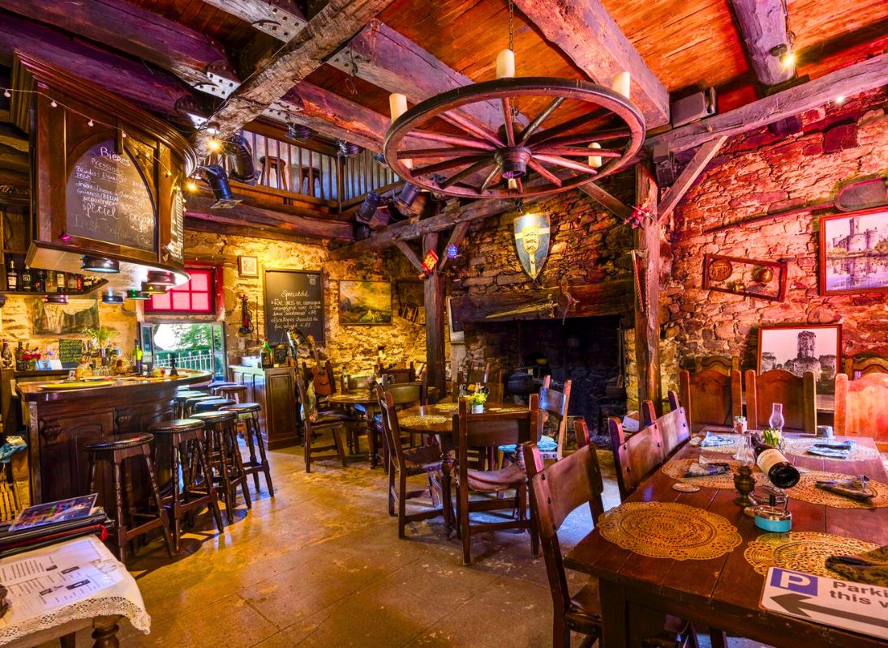

À PROPOS DE NOUS
Découvrez comment, à travers notre magnifique aventure qui dure depuis 1966, nous vous proposons toujours des moutardes savoureuses et onctueuses pour accompagner vos plats.
La carte MultiFaye, notre carte de fidélité, vous permettra d'obtenir pleins de réductions sur certains de nos produits.
Jusqu'à 90% de réduction !
En vous abonnant, vous recevrez chaque semaine un coffret de moutardes gratuit pendant la première semaine.
Découvrez comment, à travers notre magnifique aventure qui dure depuis 1966, nous vous proposons toujours des moutardes savoureuses et onctueuses pour accompagner vos plats.
Depuis 2010, FAYE Corporation vous propose des visites quotidiennes de ses plantations de moutarde accessibles à tous grâce à ses bus nouvelle génération. Sylvie, notre guide, vous expliquera à travers une promenade d’1h45 les différentes étapes de la plantation à la récolte de notre madeleine de Proust.
Au mois de mars 2025, FAYE Corporation a fait confiance au constructeur polonais Solaris afin de remplacer ses vieux bus Diesel qui circulaient autrefois sur les chemins des champs. Nos nouveaux bus 100% électriques sont équipés de portes coulissantes qui facilitent l’accès à bord. Elles permettent ainsi par le biais d’une rampe électrique située au niveau de la deuxième porte, l’accès aux personnes à mobilités réduites. Orienté pour le confort de tous, ils embarquent des sièges de nouvelle génération aux couleurs de l’entreprise, des écrans qui vous indiquent en temps réel la position exacte des véhicules, des prises USB-C qui vous permettront de recharger vos appareils en toute simplicité ainsi qu’un système de chauffage et de climatisation électrique situé en toiture des véhicules afin de garantir un confort optimal.
Les départs s’effectuent toutes les demi-heures à la boutique de Marqueyssac du lundi au samedi de 10h à 18h sans interruption du 2 mai au 30 septembre. Du 1er octobre au 30 avril, les départs s’effectuent toutes les heures du lundi au samedi de 10h à 12h30 et de 14h à 18h. Tous les premiers mercredis du mois, FAYE Corporation organise une dégustation de ses produits du terroir. Découvrez des saveurs uniques : embarquez dans un voyage gustatif ornée de surprises et de savoir-faire ancestral !
Ouvert en 2021 suite à la pandémie de COVID 19, notre restaurant la Taverne de Laurent vous propose une gastronomie 4 étoiles. Entre saveurs locales et produits du terroir, la Taverne de Laurent saura satisfaire petits et grands.
Découvrez nos plats préparés par notre chef Kamal Bouazid, arborés de nos moutardes préparées dans nos usines Périgourdine. Embarquez dans un tourbillon de saveurs auxquelles vous n’avez jamais goûté et savourez nos desserts mêlant parfaitement le raffinement et l’audace.
Tous nos plats et condiments sont méticuleusement préparés avec des produits biologiques.